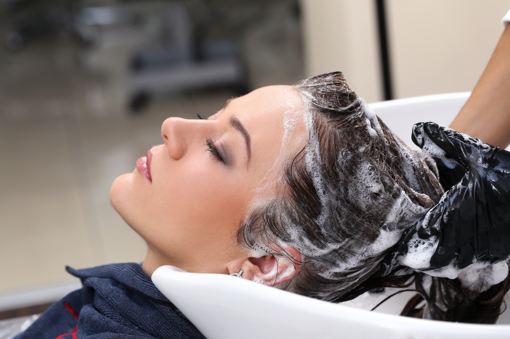
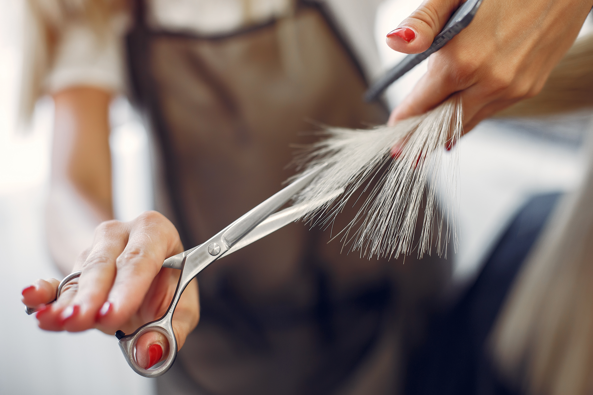
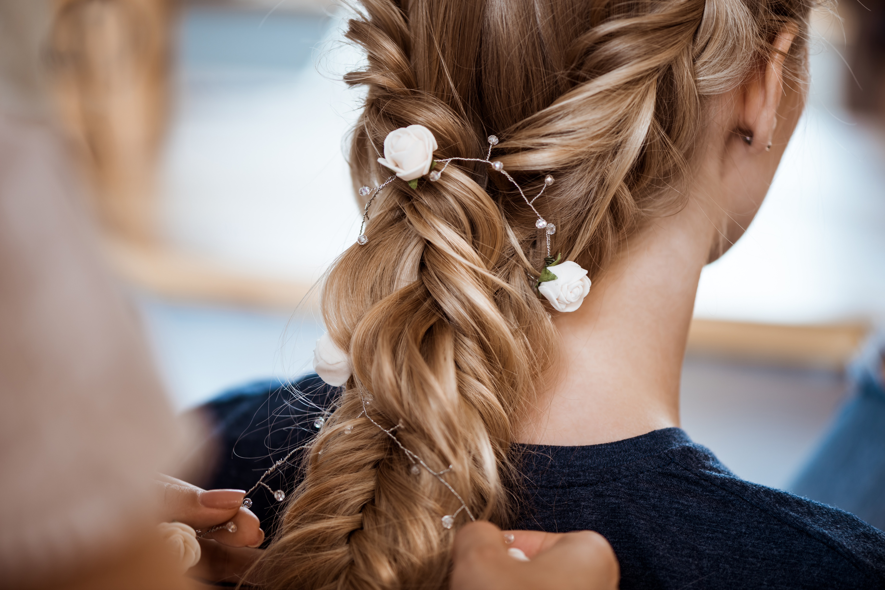
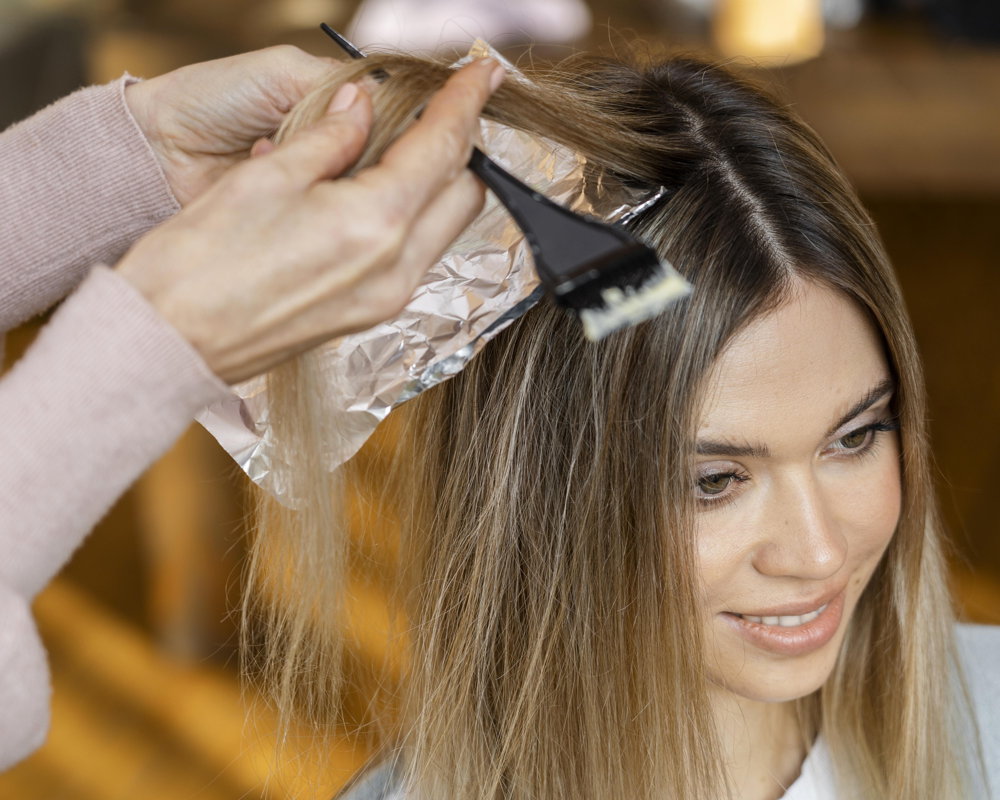
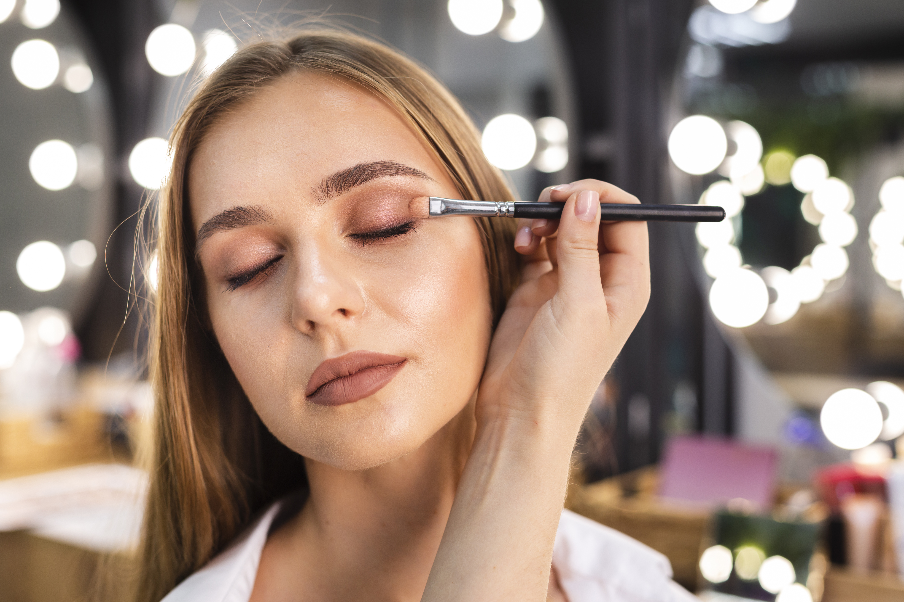
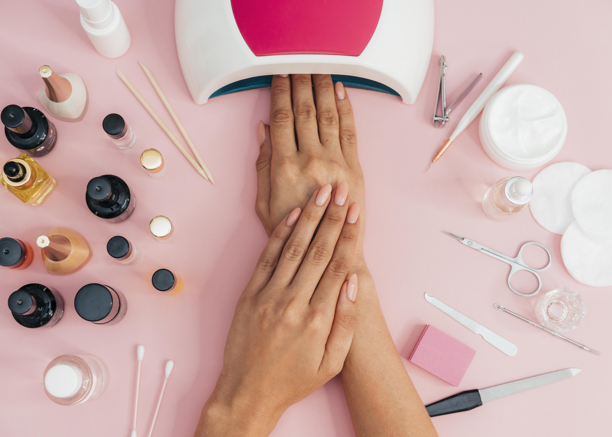
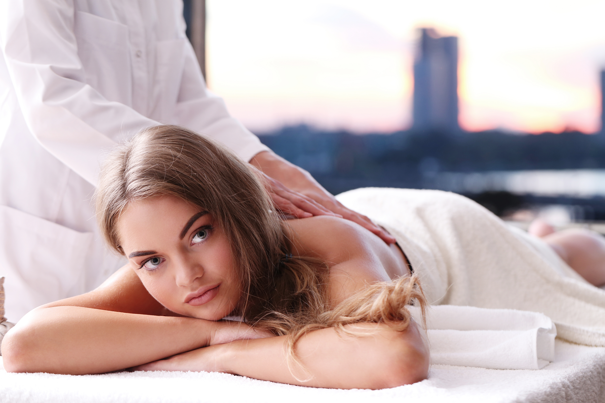

SERVICIOS LA PELU
LAVADO
El primero de los servicios, el más importante. Lavarte el cabello previo a un corte o peinado y/o luego de una coloración: hace al inicio y/o la finalización perfecta de tu experiencia en LA PELU. Contamos con las mejores manos en nuestro equipo y una amplia variedad de marcas Premium que te garantizan un momento único. Las grandes marcas de la cosmética argentina, francesa, británica, italiana entre otras, dan garantía de formación para la persona que te lavará el pelo y un producto a medida según deseo y necesidad. Contarás con el asesoramiento preciso sobre tu cuero cabelludo y pelo para lograr la excelencia y confort que necesitas. No te pierdas una de las mejores experiencias en LA PELU.

CORTES
Tijeras, máquinas, varios filos, precisión, técnica y sobre todo un estilo único hacen fundamental el Corte en LA PELU. ¡Nuestro equipo de profesionales podrá asesorarte y hacer lucir tu pelo con el look ideal! El pelo es el accesorio más importante que tenemos. El Team LA PELU de corte y peinado está en constante perfeccionamiento sobre nuevas técnicas y tendencias. No dudes en dejarte asesorar. Cada uno de ellos se destaca en poder interpretar tu deseo y adaptarlo para un fácil y práctico día a día. Nuestro corte es diseñado exclusivamente para vos y tu vida cotidiana.PEINADOS
Existe una amplia forma de llegar a tu peinado, Brushing, planchitas, ondas, y muchos más. BLOWDRY, RECOGIDOS Y SEMI RECOGIDOS, STREET STYLE, PONYTAIL (COLAS DE PELO),MODERN CHIGNON,TRENZAS son las mas pedidas y usadas en esta era. La combinación de lo que nos pidas tenemos para ofrecerte en LA PELU trae tu imagen, foto, jpg y la adaptamos a tu cabello teniendo en cuenta tus rasgos personales. Animate y cambia ese dia tan epecial. 

COLORACION
El servicio de color es un universo infinito dentro de nuestro salón. Nuestra marca cuenta con el mejor equipo de coloristas del país. Nos perfeccionamos constantemente para poder abordar todas tus necesidades. Te asesoramos de una manera minuciosa para poder aconsejarte sobre qué es lo que tu cabello necesita. Cuáles son los pasos que llevara tu pelo para llegar al objetivo que deseas. Nuestra misión fundamental es mantener tu pelo sano y que luzca intacto, garantizamos tu felicidad absoluta. Como expresamos anteriormente, el universo de color es inmenso e infinito, por eso y para orientarte, te invitamos a que leas atentamente cada una de las descripciones de toda nuestra carta de servicios en color que tenemos para lograr satisfacer tus necesidadesTRATAMIENTOS PARA TU CABELLO
Détox con colágeno, si tienes las raíces grasas o notas demasiada sequedad y las puntas quebradizas. Bótox, si tienes el cabello dañado por un proceso químico.Brillo, Hidratacion, Nutrición, Reparación/ Reconstrucción. Micropeeling capilar, si eres de cabello claro natural pero se ha ido oscureciendo con el paso del tiempo Lifting, si tienes el cabello encrespado y fosco Regeneración molecular, si tienes el cabello muy dañado, extremadamente seco y encrespado. Tratamientos nanonutritivos, si tienes el cabello dañado y con falta de nutrición. Bioplastia, tienes un cabello deteriorado por el paso del tiempo, que ha perdido cuerpo, volumen y movimiento; o para disciplinar el pelo más fosco y dañado. Velaterapia,si buscas un tratamiento vegano y tienes el cabello fosco, encrespado o rizos con estructura normal (sin porosidad). Tratamiento rellenador de ácido hialurónico

MAKE UP
En LA PELU brindamos servicio de maquillaje, para eventos sociales, novias, madrinas, quinceañeras, u ocasiones especiales en los cuales quieras resaltar tu belleza con las mejores técnicas y vanguardias en el campo del make up, también brindamos servicios especiales a domicilio o en eventos en los cuales se requiera de un profesional especializado en el rubro. Trabajamos con las mejores marcas, logrando un make up de calidad y duración para ese dia tan especial.MANOS Y PIES
El cuidado de las uñas ha tomado auge en los últimos años y se ha convertido en un accesorio fundamental de la moda. En LA PELU abogamos por brindar un servicio de excelencia en cuanto técnicas y vanguardias en el mundo del nail art. Ofrecemos servicios tanto permanentes como semipermanente, kapping, esculpidas. Consultanos por las LA PELU nails.

MASAJES CORPORALES
Masaje Relajante / Descontracturante,se realiza cuando el cliente presenta un estrés físico o emocional. Masaje Reafirmante / Estimulante,también llamado estimulante o tonificante, nos ofrece una mejora en el tono muscular y del tejido cutáneo, especialmente para la prevención y el tratamiento paliativo de la flacidez en abdomen, brazos, piernas y glúteos. Masaje Circulatorio, lo aplicamos sobre las alteraciones estéticas derivadas del sistema venoso, especialmente en las extremidades inferiores: edemas y estasis venosas superficiales. Masaje Modelador, para ayudar a reducir las acumulaciones adiposas y favorecer el drenaje del infiltrado del tejido conjuntivo.